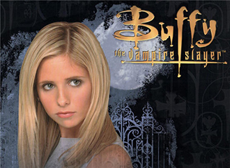
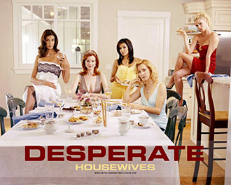

Buffy The Vampire Slayer
After the traumatizing ordeal in the movie with the same name, Buffy Summers and her mother move to Sunnydale, only to discover that L.A. was just a walk in the park...
Desperate Housewives
Secrets and truths unfold through the lives of female friends in one suburban neighborhood, after the mysterious suicide of a neighbor.
Monk
Adrian Monk is a brilliant San Francisco detective, whose obsessive compulsive disorder just happens to get in the way.
Spartacus
Watch the story of history's greatest gladiator unfold with graphic violence and explicit sex. This is Spartacus.
Spartacus: Gods of the Arena
Before Spartacus struck down his first opponent in the arena, there were many gladiators who passed though the gates onto the sand.'Spartacus: Gods of the Arena' tells the story of the original Champion of the House of Batiatus: Gannicus in a more ruthless time before Spartacus' arrival where honor was just finding its way into the arena.